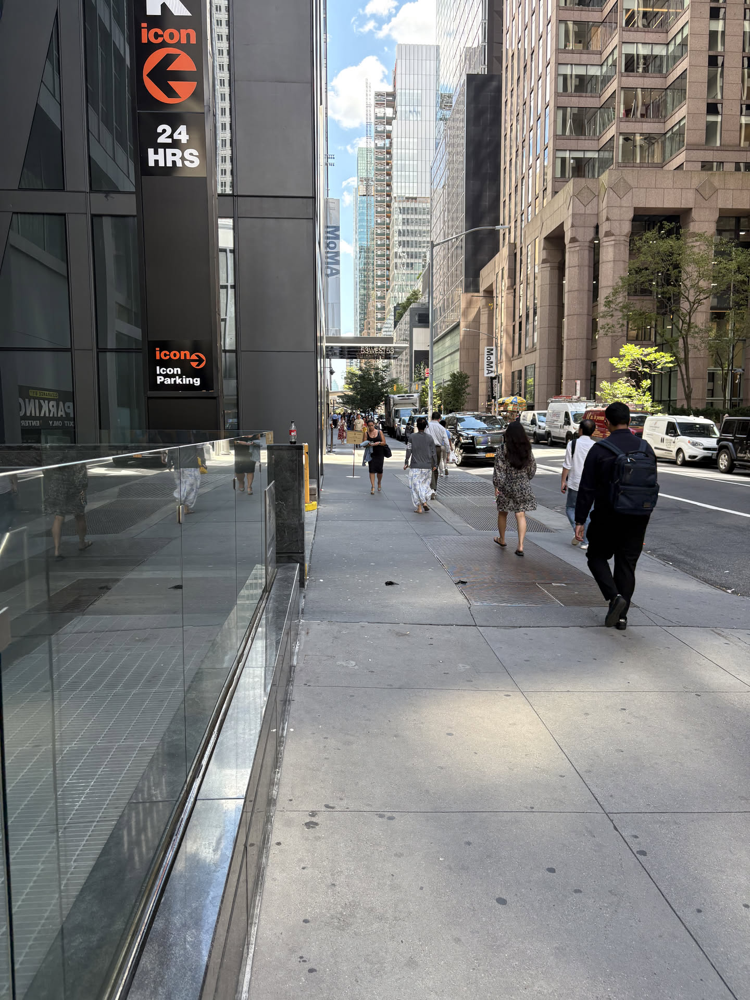
New York City · August 26, 2025
Looking slowly
at MoMA
Eleven works, one afternoon, and a few notes from between the frames.
New York makes you walk quickly. MoMA asks for the opposite.
I arrived from 53rd Street and stepped into a building made for changing pace. Outside, every block was an instruction to keep moving. Inside, one room could hold me for twenty minutes.
This is not a complete guide to the museum. It is a trail through the works that made me stop: famous images that felt unexpectedly physical, quieter pieces that rewarded a second look, and the small details a reproduction always flattens.
01
The familiar, made strange again
Fame changes
the room.
Some paintings arrive before you do. You know their silhouettes from books, screens, and souvenirs. The surprise is discovering the object—and the crowd—behind the image.
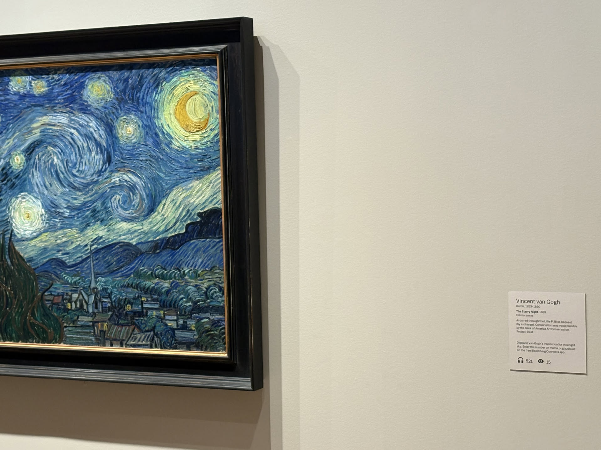
01 / 11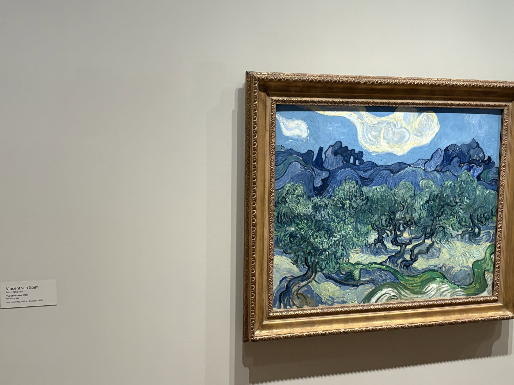
02 / 11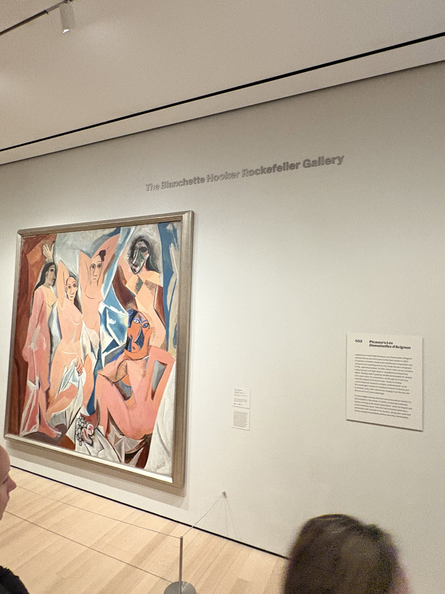
03 / 11A masterpiece on a screen is an image. On a wall, it becomes a place—with scale, glare, edges, and other people orbiting it.
The turbulence in The Starry Night is even more alive at close range, but it was the calmer encounter with The Olive Trees that stayed with me. Nearby, Picasso’s figures felt less like a textbook turning point and more like a confrontation. These works have been reproduced endlessly; none of those copies include the strange social choreography of seeing them together.
02
Surface and atmosphere
A painting can
change the air.
I kept moving between dense surfaces and open space: leaves becoming pattern, a pond becoming horizon, a strict grid somehow finding rhythm.
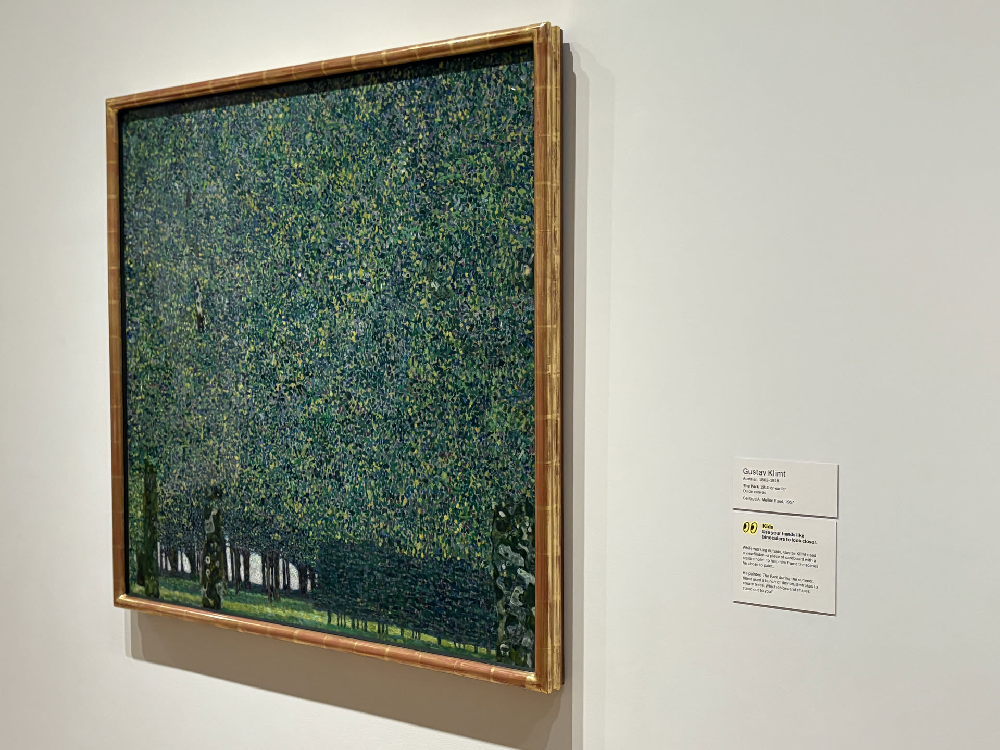
04 / 11Gustav KlimtThe Park
1910 or earlier
Oil on canvas
From a distance: a park. Up close: hundreds of small decisions in green.
Klimt’s The Park almost dissolved into texture. It was easy to recognize the trees, then just as easy to lose them again. That flicker between subject and surface became the rhythm of the afternoon.
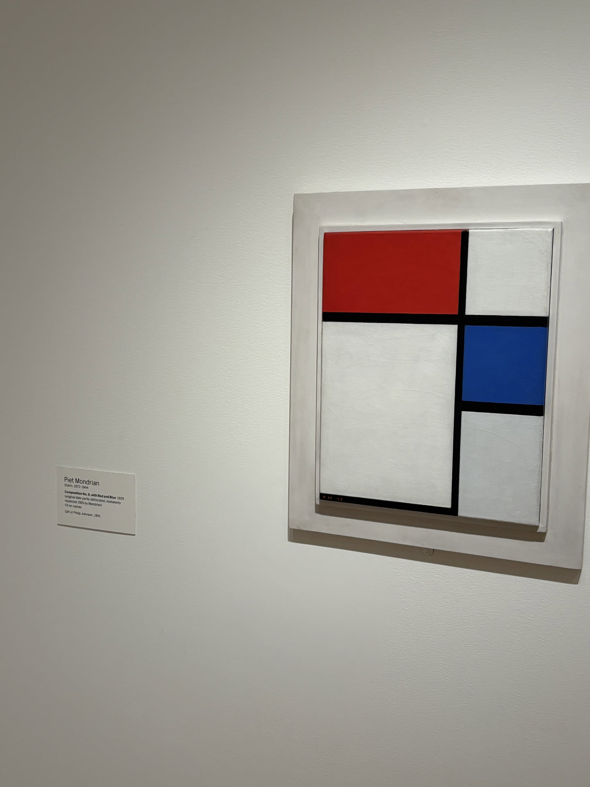
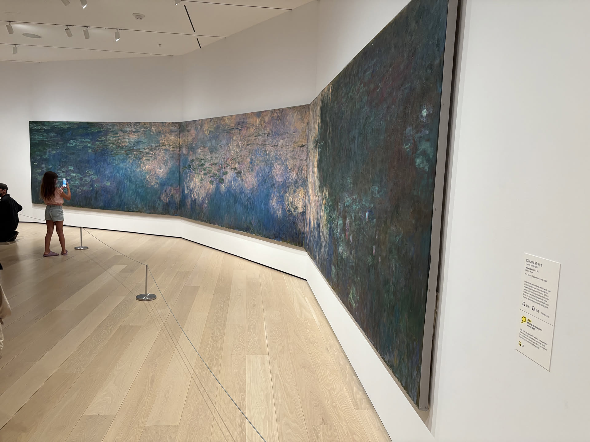
Mondrian compressed the world into a taut little arrangement. Monet did the reverse: his pond expanded until it seemed to erase the wall. One controls every boundary; the other lets the eye drift. Seeing them on the same walk made both feel sharper.
03
Machines for seeing
Art that refuses
to sit still.
The most playful room was full of objects that behaved like ideas: machines, optical jokes, and images that seemed to turn even when they were still.
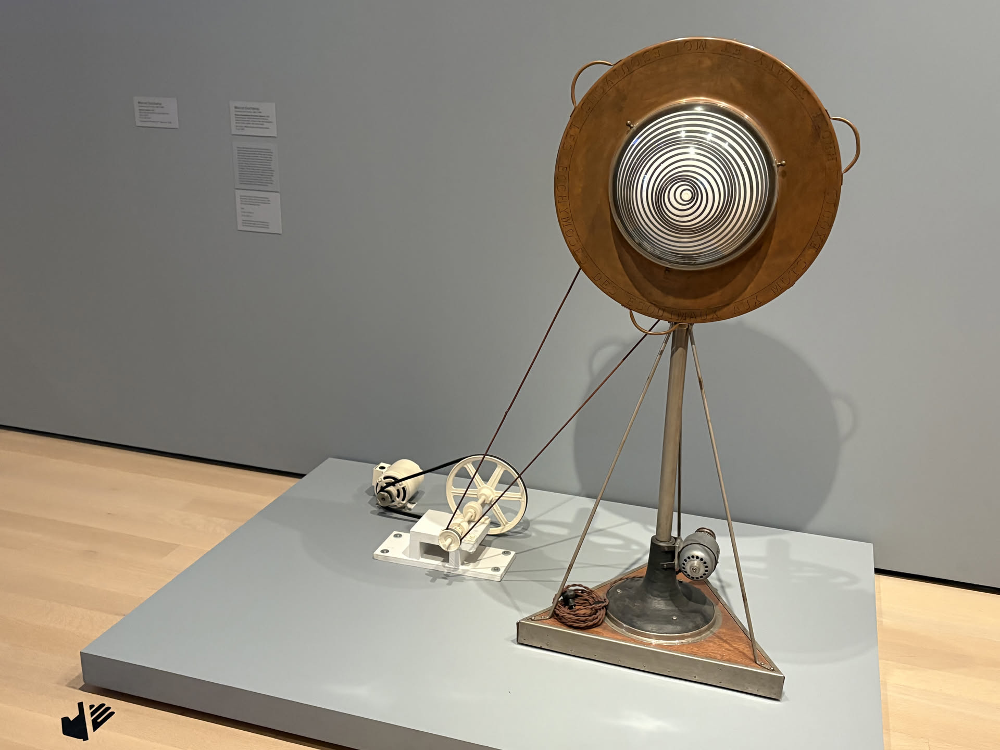
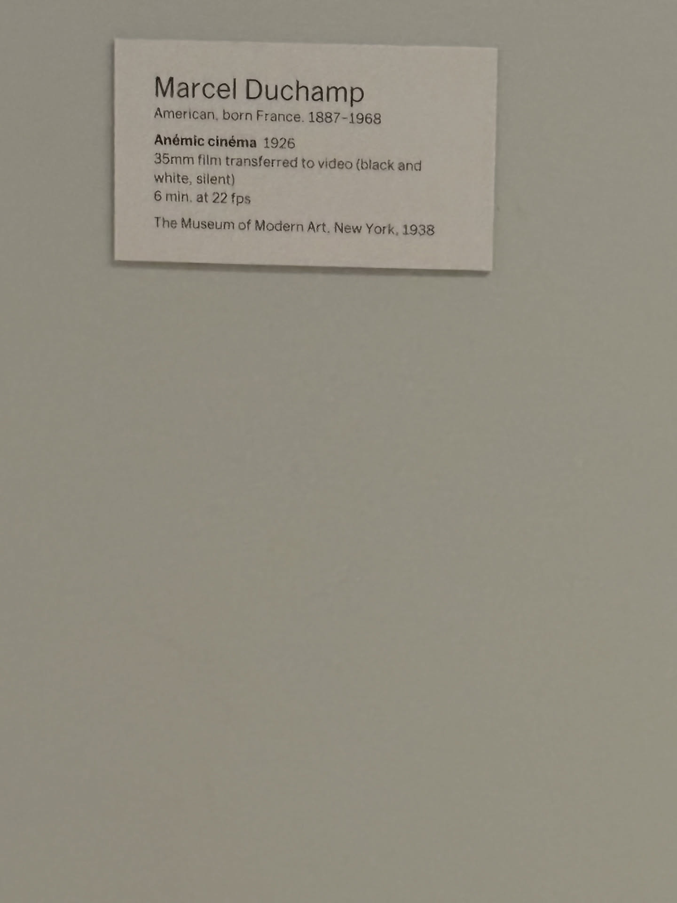
Duchamp made looking feel mechanical, comic, and slightly unreliable.
These works made the museum feel less like a sequence of finished answers. They are closer to prototypes: devices that test what motion, repetition, and perception can do. I liked their visible awkwardness—the wires, stands, discs, and handmade engineering of an idea.
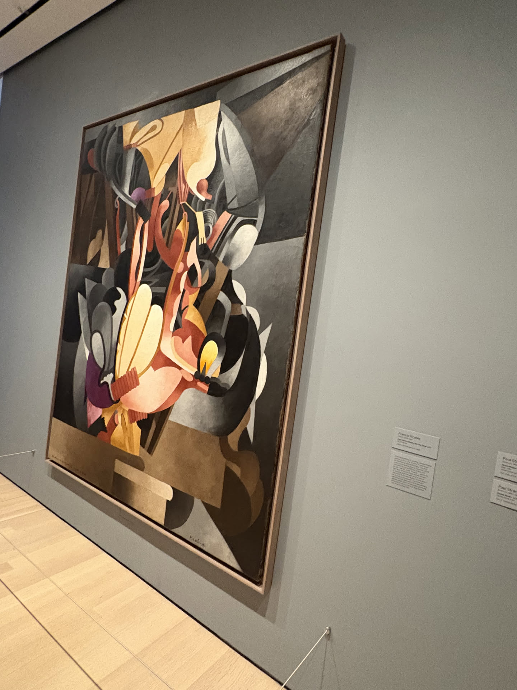
I See Again in Memory My Dear UdnieFrancis Picabia · 1914
04
The last rooms
Leave a little
unresolved.
By the end, I was no longer trying to “cover” the museum. I was looking for the works that asked one clean question and left it open.
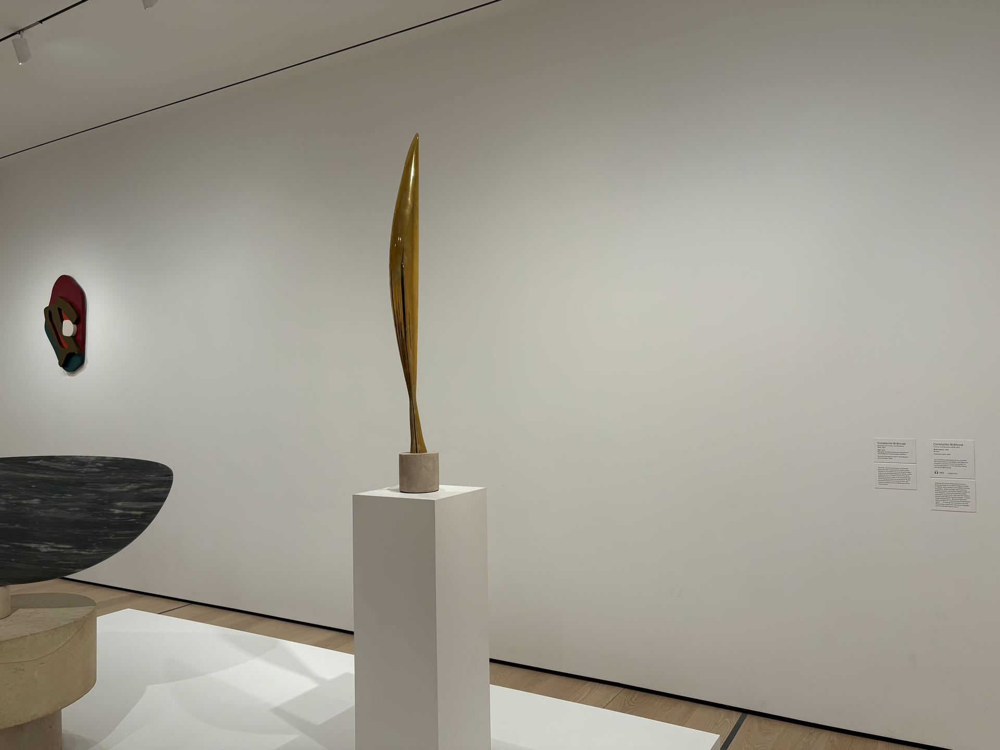
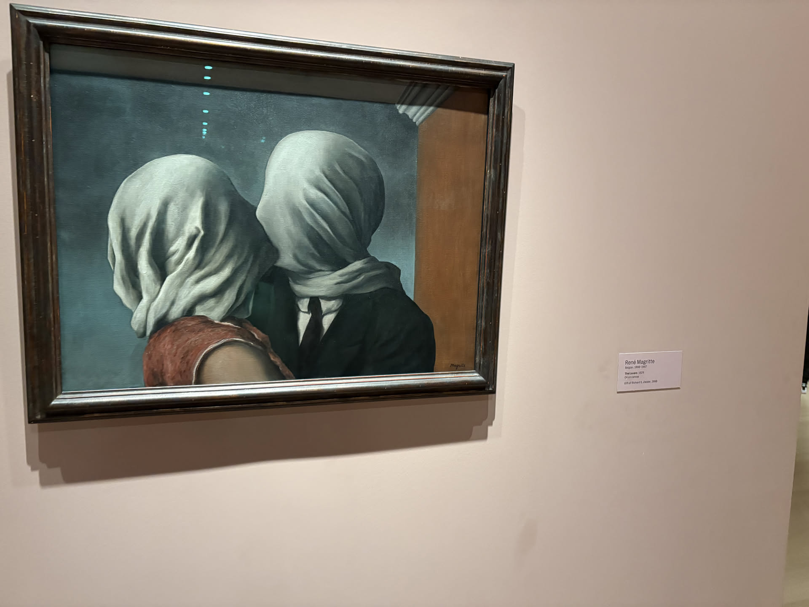
The best part of a museum visit is not remembering everything.
It is noticing what follows you out. For me, it was the movement in Van Gogh’s sky, the almost weightless lift of Brancusi’s bird, and Magritte’s impossible closeness. Outside, Midtown returned at full speed. The looking stayed slow for a little longer.